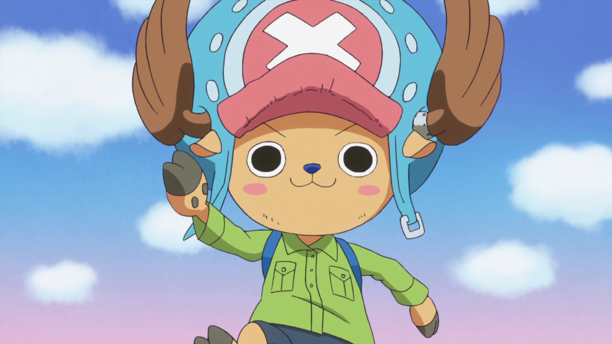

Tony Tony Chopper - Médico
Confundido como mascote do bando do Chapéu de Palha. Quinto a entrar no bando do Chapéu de Palha.
Um dos poucos tripulantes que nasceu na Grand Line.
É uma rena que comeu a fruta Hito Hito no Mi, uma fruta que permitiu ter características humanoides, raciocínio e inteligência que nem de humanos e a possibilidade de transformar seu corpo. Com o controle sobre seu poder, ele consegue assumir 7 formas diferentes para seu corpo.
Seu sonho é navegar pelo mundo e ampliar seus conhecimentos médicos.
Sua recompensa atualmente é de  100
100